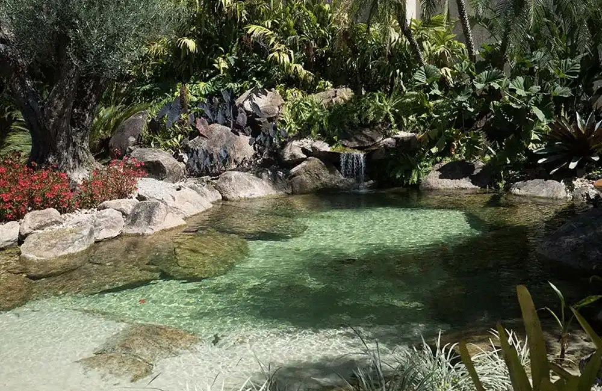
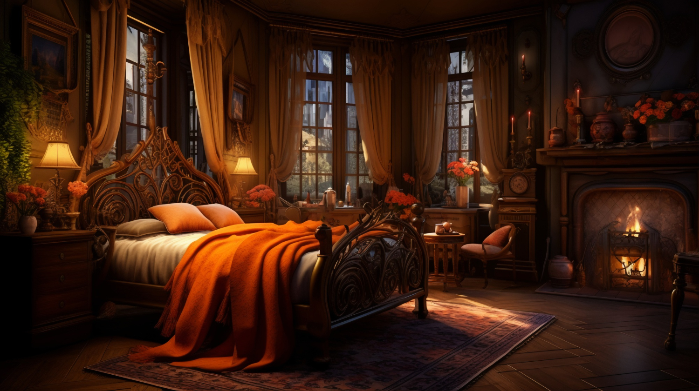
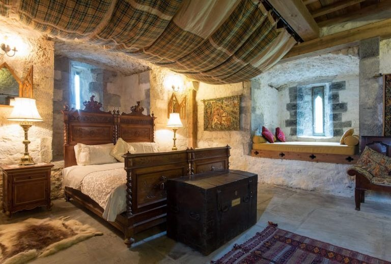
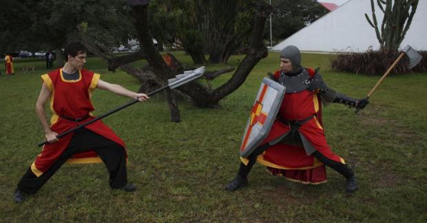
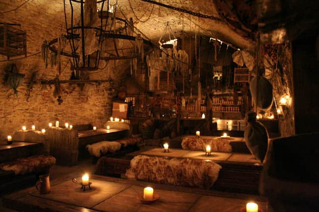
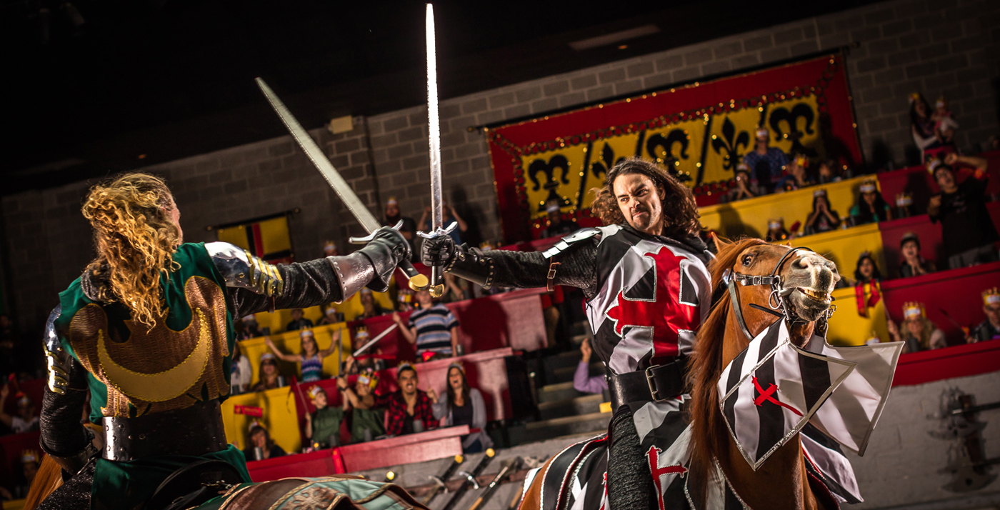

Piscina
A piscina foi criada com o intuito de simular um lago, proporcionando uma experiência autêntica e imersiva que remete à era medieval. Esse design busca replicar um ambiente natural, trazendo uma maior proximidade do hóspede com o contexto histórico e cultural que queremos recriar.
Na era medieval, os lagos e corpos d'água naturais eram elementos essenciais da paisagem, frequentemente associados a castelos, fortalezas e vilarejos. Esses ambientes eram fontes de água, pesca e lazer, além de desempenharem um papel estratégico na defesa e no sustento das comunidades. Ao projetar uma piscina que imita um lago, procuramos capturar essa essência, oferecendo aos visitantes uma sensação de voltar no tempo e viver uma experiência medieval autêntica.
A piscina é cuidadosamente projetada para se integrar harmoniosamente com os elementos naturais circundantes, como pedras, vegetação e estruturas rústicas. Esses detalhes não só embelezam o espaço, mas também contribuem para a atmosfera histórica e pitoresca. Plantas aquáticas, como nenúfares e juncos, podem ser incorporadas ao design para aumentar a verossimilhança e a beleza do local, enquanto bancos de madeira e tochas completam a ambientação, lembrando os tempos antigos.
Além do aspecto estético, a escolha de simular um lago também oferece benefícios funcionais. A água pode ser tratada de maneira mais natural, utilizando sistemas de filtragem biológica e plantas aquáticas para manter a limpeza e a saúde do ambiente aquático. Isso não só reduz a necessidade de produtos químicos, mas também proporciona uma experiência mais agradável e saudável para os banhistas.
Por fim, a piscina-lago serve como um ponto focal para atividades e eventos temáticos. Festas, banquetes ao ar livre, torneios de justa e outras recriações históricas podem ser realizadas nas proximidades, aumentando a imersão dos hóspedes na era medieval. Esse ambiente não só oferece relaxamento e lazer, mas também educação e entretenimento, tornando a estadia inesquecível.
Em resumo, a criação de uma piscina que simula um lago medieval é uma escolha deliberada para proporcionar uma experiência rica, autêntica e envolvente. Ao replicar um ambiente natural e histórico, oferecemos aos hóspedes uma conexão única com a era medieval, repleta de beleza, tranquilidade e uma sensação de viagem no tempo.
Quartos
Os quartos do nosso resort foram meticulosamente projetados para transportar os hóspedes diretamente para um período medieval, mantendo o equilíbrio perfeito entre autenticidade histórica e conforto moderno. Com apenas dois quartos, cada um foi personalizado com atenção aos mínimos detalhes, garantindo uma experiência exclusiva e imersiva.
Quarto do Nobre
O Quarto do Nobre é uma suíte espaçosa e luxuosa, inspirada nos aposentos das altas figuras da nobreza medieval. A decoração inclui:
- Mobília de Época: Móveis de madeira maciça esculpidos à mão, incluindo uma cama de dossel com cortinas de veludo, baús antigos e cadeiras ornamentadas.
- Têxteis Ricos: Roupas de cama de linho e seda, tapetes persas e cortinas pesadas que adicionam um toque de opulência.
- Iluminação: Candelabros de ferro forjado e lâmpadas de parede com design medieval, proporcionando uma iluminação suave e atmosférica.
- Decoração: Tapeçarias detalhadas, brasões de família, espadas e escudos decorativos que adornam as paredes, criando uma sensação autêntica de um castelo medieval.
- Confortos Modernos: Embora o design seja histórico, o quarto está equipado com todas as conveniências modernas, como Wi-Fi, ar-condicionado, e um banheiro luxuoso com banheira de hidromassagem e chuveiro.
Quarto do Artesão
O Quarto do Artesão oferece uma experiência mais rústica, inspirada na vida dos trabalhadores habilidosos da era medieval. Este quarto é acolhedor e charmoso, com elementos que refletem o artesanato e a vida diária da época. As características incluem:
- Mobília Simples e Funcional: Móveis de madeira robusta, incluindo uma cama confortável, uma escrivaninha artesanal e prateleiras repletas de objetos de época.
- Detalhes Artesanais: Objetos de cerâmica, tecidos tecidos à mão e ferramentas de artesanato expostas, proporcionando um ambiente autêntico e culturalmente rico.
- Iluminação: Lâmpadas de óleo e velas, complementadas por luzes modernas discretamente integradas para conveniência.
- Decoração: Paredes adornadas com artefatos de artesanato, como cestarias, tapeçarias e instrumentos de trabalho, criando um ambiente histórico e educativo.
- Confortos Modernos: Assim como o Quarto do Nobre, o Quarto do Artesão oferece todas as comodidades modernas necessárias para uma estadia confortável, incluindo Wi-Fi, aquecimento e um banheiro privativo bem equipado.
Experiência de Imersão
Ambos os quartos foram projetados não apenas para fornecer um lugar para dormir, mas para oferecer uma verdadeira experiência de imersão na era medieval. Cada detalhe foi cuidadosamente selecionado para refletir a estética e a atmosfera daquele período, desde os materiais utilizados até os pequenos ornamentos decorativos.
Teatro de Batalha
Para recriar a emoção das batalhas medievais, implementamos batalhas encenadas de forma realista pelos nossos talentosos atores. Estes espetáculos são cuidadosamente coreografados para garantir a segurança, mas também para proporcionar uma experiência autêntica e emocionante aos nossos hóspedes. Aqui estão alguns aspectos que tornam nossas batalhas únicas:
Impacto Educativo e Cultural
Além do entretenimento, as batalhas encenadas têm um forte componente educativo. Os espectadores aprendem sobre a história, as táticas militares e a vida cotidiana da era medieval. Palestras e workshops são oferecidos para aprofundar o conhecimento sobre o período, complementando a experiência visual com informações ricas e detalhadas.
Em resumo, as batalhas encenadas no nosso resort não são apenas um espetáculo visual, mas uma viagem imersiva e educativa para os tempos medievais. Oferecemos uma experiência única e emocionante que combina autenticidade, segurança e participação ativa, garantindo momentos inesquecíveis para todos os nossos hóspedes.
Taberna
Nossa taberna oferece uma experiência gastronômica única, onde a temática de RPG (Role-Playing Game) está presente em cada detalhe, desde os nomes dos pratos até uma mecânica de bebida interativa que transforma cada visita em uma aventura.
Cada prato do nosso menu tem um nome inspirado em elementos clássicos dos RPGs, transportando os clientes para um mundo de fantasia a cada refeição. Aqui estão alguns exemplos de pratos que você pode encontrar:
- Sopa do Dragão Ancião: Uma sopa rica e saborosa feita com ingredientes exóticos e picantes, lembrando o fogo de um dragão.
- Assado do Cavaleiro Errante: Um suculento assado de carne acompanhado de vegetais grelhados, digno de um banquete medieval.
- Pão do Mago: Pães artesanais recheados com ervas e queijo, perfeitos para um lanche mágico.
- Estufado da Guilda dos Aventureiros: Um guisado robusto e nutritivo, ideal para restaurar a energia após uma longa jornada.
- Sobremesa do Elfo Dourado: Uma torta delicada de frutas com mel e especiarias, evocando os sabores da floresta encantada.
Bebida D20
Nosso cardápio de bebidas é tão diversificado quanto a nossa seleção de pratos, com opções que variam desde cervejas artesanais até coquetéis exóticos. Aqui estão algumas das bebidas que você pode obter ao lançar o dado:
- 2-5: Cervejas artesanais de diferentes estilos, como IPA, Stout, e Lager.
- 6-10: Hidromel, uma bebida tradicional dos tempos medievais.
- 11-15: Coquetéis temáticos, como o "Elixir do Feiticeiro" (uma mistura de gin com ervas e frutas) e a "Poção de Mana" (um coquetel azul energético).
- 16-19: Bebidas especiais que não estão no cardápio, criadas pelo nosso mixologista para surpreender e encantar.
- 20: Qualquer bebida do cardápio, permitindo total liberdade de escolha.
Torneio de PVP
Chegamos ao evento mais aguardado pelos nossos clientes: o Grande Torneio do Aventuriro. Este evento oferece uma oportunidade única para todos os presentes, adultos e crianças, participarem de batalhas amigáveis e emocionantes em um ambiente seguro e controlado.
Durante o Grande Torneio, os hóspedes são convidados a se tornarem cavaleiros, guerreiros ou magos por um dia, participando de batalhas encenadas com armas seguras. Aqui estão alguns detalhes sobre como esse evento funciona:
Armas Seguras e Materiais Amigáveis:
- Espadas de Espuma: Feitas de materiais macios e leves, permitindo combates intensos sem risco de lesões.
- Escudos de Borracha: Resilientes e seguros, proporcionando proteção e autenticidade.
- Arcos e Flechas de Ventosa: Para aqueles que preferem combate à distância, garantindo diversão sem perigo.
Equipamento Adicional:
- Armaduras de Espuma e Plástico: Para aumentar a imersão e proteger os participantes durante as batalhas.
- Capacetes e Proteções Corporais: Garantindo que todos os participantes, especialmente as crianças, estejam bem protegidos.